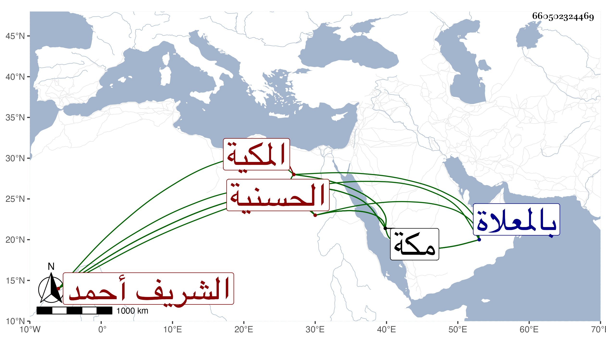

0902Sakhawi.DawLamic.ITO20230111-ara1.EIS1600.660502324469
Biography ID: 660502324469
541
فاطمة ابنة أمير مكة الشريف أحمد بن عجلان بن رميثة بن أبي نمى الحسنية المكية ، كان الشريف محمد بن محمود بن أحمد بن رميثة تزوجها في حياة امها ثم طلقها وتزوجها بعده الشريف عنان بن مغامس بن رميثة في امارته الثانية على مكة وذلك في آخر سنة اثنتين وتسعين أو سنة ثلاث ومات عنها ثم زوجها الشريف حسن بن عجلان ابنة الشريف بركات فماتت عنده بعد ان اقامت في عصمته سنين ، وكانت ذات حشمة ورياسة وعقار كثير ، ماتت في سنة اربع عشرة بمكة ودفنت بالمعلاة ، ذكرها الفاسي .
